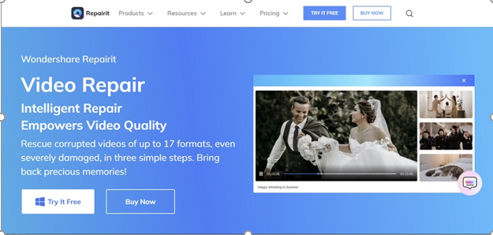

INTRODUCTION OF WONDERSHARE REAPIRIT
MP4 videos are a go-to format for capturing and sharing memorable moments. However, you can encounter scenarios when your MP4 files get corrupted or damaged. This can surely ruin the memories you have saved in the form of videos. A video repair tool to repair videos has become essential to avoid such incidents and recover lost memories
For this purpose, you can turn your heads towards Wondershare Repairit to help you solve MP4 file-related issues. Therefore, this article will discuss methods to fix corrupted videos using different techniques Repairit provides.
TIPS & TRICKS
Useful Tricks and Tips to Avoid Corruption in MP4 Videos Ensuring the safety of your MP4 video files is very important to avoid the hassle of repairing these files. There are so many tips and techniques to overcome this problem. To preserve your video files, you can get help from these valuable suggestions:
- Install Antivirus Software: Protect your MP4 files from corruption by installing reputable antivirus software. These programs offer real-time scanning to detect and eliminate potential threats. Additionally, these software safeguard your videos from malicious attacks.
- Backup Videos Regularly: You can preserve your valuable MP4 files by backing them up regularly. By creating duplicates of your videos and storing them securely, you can restore your video in case the original file gets corrupted.
- Use Storage Devices with Caution: Users should defend their videos by scanning storage devices with antivirus software before use. Additionally, they have to exercise caution when connected to public computers and ensure proper ejection to minimize the risk.
- Make Edits on Copied Video Files: Minimize the risk of video corruption during editing and conversion processes by working on copies of your original files. Preserving your original MP4 videos can prevent accidental damage and ensure smooth editing workflows.
- Maintain Your Device Battery: By maintaining adequate device battery levels, you can prevent unexpected device shutdowns. If not managed, these shutdowns can lead to MP4 file corruption. Let’s play!
A User-Friendly Guide to Repair MP4 Files Online via Wondershare Repairit
Now, you know the useful tricks and tips to avoid corruption with MP4 files. But if you are already facing the issue, you might need a tool to repair MP4 file. For this purpose, you can try Repairit Online for a quick and efficient video repair process. This online MP4 video repair supports different storage media, including mobiles, hard drives, and more, for recovering your videos. However, you can only upload MP4 files up to 50MB on the free online version. However, the paid version of this online tool allows you to upload around 3GB of video. Plus, with its offline AI video enhancement feature, you can improve your overall video quality.